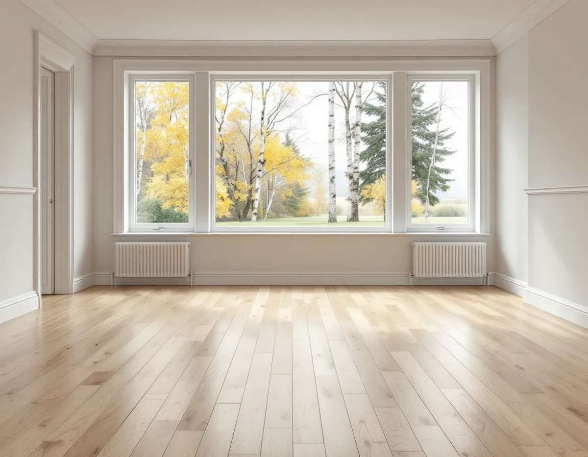
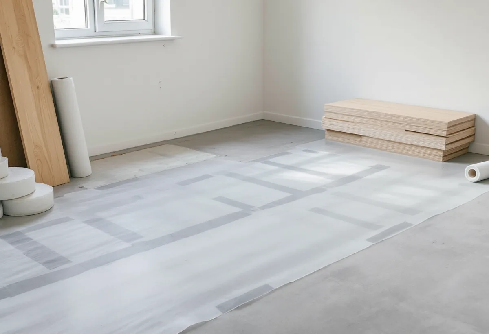

Platsbesök
Vi lyfter en list eller tröskel, känner efter lukt och frågar om husets ålder och tidigare golvbyten.

Står huset på en betongplatta är det skikten mellan betongen och ytan som avgör om ett nytt golv håller, inte själva golvet.
Beskriv jobbet kort.
Något blev fel. Kontrollera uppgifterna eller ring 08 12 410 276.
Vi tittar på jobbet på plats innan du får offert.
Du ser vad som ingår och vad det kostar.
Vi drar av ROT direkt och sköter ansökan.
Geal Entreprenad AB, Bromma. Org.nr 559303-7566.

Enligt SCB finns 7 571 bostäder i småhus i Sigtuna kommun. Geal Entreprenad AB lägger nya golv och slipar trägolv i Märsta, Valsta, Sigtuna stad, Rosersberg och resten av kommunen, med gratis platsbesök, skriftligt kostnadsförslag och ROT-avdraget direkt på fakturan.
Boverket beskriver hur betongplattan på mark kom in i bostadsbyggandet i början av 1960-talet och hur sättet att bygga golv ovanpå den har ändrats flera gånger sedan dess, ofta för att lösa ett problem som den förra metoden gav. En plastfolie över betongen med ångöppen isolering ovanpå skulle stoppa fukten underifrån, men under folien kunde smuts ge påväxt och lukt. Flytande golv på en bädd av sand ersatte träreglarna, men sanden var inte ren och gav också påväxt. Flytande golv på cellplast sviktade och gav gnisselljud.
Boverket nämner också avjämningsmassa med kasein, ett flytspackel med benmjöl, som kunde brytas ned kemiskt när fukten var hög och påverka inomhusmiljön. Två hus från samma årtionde kan därför ha helt olika golv under ytan. Vi börjar med att lyfta en tröskel eller en sockellist för att se vilka skikt som finns, innan vi föreslår vad som ska rivas och vad som kan ligga kvar.
Sigtuna kommun räknar upp ett antal konstruktioner som kan leda till fuktproblem i ett hus. Två av dem rör golvet direkt: trämaterial i kontakt med betong, till exempel impregnerat virke som har gjutits in i bottenplattan, och sand ovanpå plattan som är förorenad med organiskt material. Kommunen nämner också otillräcklig dränering runt huset, hus i låglänta lägen med högt grundvatten och stuprör som inte leder bort vattnet, i kombination med fel lutning på marken.
Mögel och fuktiga byggmaterial kan enligt kommunen ge kraftiga dofter. Känns en unken lukt när den gamla mattan eller spånskivan lyfts, avbryter vi och tar reda på varifrån fukten kommer innan något nytt läggs. Ett nytt golv ovanpå en fuktig bädd flyttar bara problemet ett lager upp. Leder stuprören vattnet mot grunden finns det mer om takavvattningen under takrenovering i Sigtuna.
Om betongen inte har torkat tillräckligt innan golvet läggs kan det enligt Boverket uppstå fuktskador under golvet, i golvmaterialet eller i limmet, och det kan ge dålig lukt i huset. Därför mäter man den relativa fuktigheten, RF, i betongen och i ett eventuellt avjämningsskikt. Golvbranschen skriver att mätning i golvavjämning numera görs enligt RBK:s fuktmätningsmanual inom RBK:s system för fuktkontrollanter, och att en RF-mätning på självtorkande avjämning inte ger ett relevant värde inför en tidig golvläggning, eftersom massan fortsätter att torka kemiskt inifrån.
Mätvärdet styr sedan valet av golv. Linoleum har enligt Golvbranschen ett lågt ånggenomgångsmotstånd och kan därför läggas på betong med en restfukt på upp till 90 procent RF. För trägolv är kraven högre: Golvbranschens handbok om trägolv på golvvärme anger att parkett ska skyddas mot fukt från undergolvet när RF överstiger 60 procent, och att ett fuktskydd som ångspärr krävs på golv mot mark. Handboken påpekar också att det bara får finnas ett fuktskydd i golvet, eftersom fukt annars kan stängas in mellan två skikt.
Radon från marken kan enligt Sigtuna kommun läcka in genom otätheter i grunden och där rör och kablar går in i huset. Kommunen nämner också blåbetong, som tillverkades mellan 1929 och 1975, och skriver att många hus med källare eller suterrängvåning från den tiden kan innehålla den. Radonhalten bör ligga under 200 becquerel per kubikmeter luft, och mätningen ska pågå i minst två månader under eldningssäsongen, mellan 1 oktober och 30 april.
Ska golvet öppnas för nya avloppsrör, till exempel när badrummet i Sigtuna görs om, tätar vi kring genomföringarna innan golvet stängs. Har huset inte mätts på länge är det klokt att beställa mätdosor från ett ackrediterat laboratorium inför vintern efter arbetet. Kommunen hänvisar till Swedac och Svensk Radonförening för att hitta ett sådant. Vill du jämföra golvtyper innan du bestämmer dig finns en genomgång på sidan om golvläggning.
Vi lyfter en list eller tröskel, känner efter lukt och frågar om husets ålder och tidigare golvbyten.
Ser underlaget tveksamt ut föreslår vi en RF-mätning innan golvtyp väljs.
Rivning, nytt underlag, fuktskydd och golv redovisas som egna poster.
Gamla skikt tas bort, plattan rensas och avjämnas om det behövs.
Fuktskydd, mellanlägg och det nya golvet läggs, med rörelsefog mot väggarna.
Lister och trösklar monteras och vi går igenom skötseln av golvet med dig.
Skatteverket ger rotavdrag för att slipa och byta golv och för att byta en plastmatta mot trägolv. På listan över godkända arbeten står också att sanera asbest och radon i samband med byggarbete. Avdraget är 30 procent av arbetskostnaden, högst 50 000 kr per person och år, och tillsammans med rutavdrag högst 75 000 kr.
Material och resekostnader ger inget avdrag. Geal drar avdraget direkt på fakturan och ansöker om det hos Skatteverket.
Golvytan och hur mycket av det gamla underlaget som måste bort betyder mest. En fuktmätning eller en ny avjämning kommer till som egna poster. Efter det kostnadsfria platsbesöket får du ett skriftligt kostnadsförslag.
Parkett, trägolv, klinker och slipning.
Golvläggning i Stockholm →Takbyte, takbesiktning och plåtarbeten.
Takläggare i Sigtuna →Sigtuna stad, Märsta och Arlanda.
Takrenovering i Sigtuna →Potten, Arlanda och gårdshusen.
Attefallshus i Sigtuna →Anmälan, fläkt och dusch i stället för badkar.
Badrumsrenovering i Sigtuna →Nytt hus, gästhus och större tomt.
Byggföretag i Sigtuna →Gatufasad, gårdsfasad och uthus i stadskärnan.
Fasadmålning i Sigtuna →Puts i stadskärnan, panel i dalgången.
Fasadrenovering i Sigtuna →Arlanda, ljudisolering och fönster i Sigtuna.
Fönsterbyte i Sigtuna →Bevarandeplanen, gammalt glas och fönsterkulörer.
Fönsterrenovering i Sigtuna →Plankgolv i äldre trähus.
Golvslipning i Sigtuna →Ventilation, avlopp och anmälan.
Köksrenovering i Sigtuna →Stadskärnan, Märsta och Rosersberg.
Målare i Sigtuna →Plåttak, rännor och beslag i Sigtuna.
Plåtslagare i Sigtuna →Staket, dörrar och gårdshus i stad och dalgång.
Snickare i Sigtuna →Lov, checklista och gårdarnas tegel.
Takbyte i Sigtuna →Ny tapet i äldre trähus.
Tapetsering i Sigtuna →Arlanda, uterum och handlingarna.
Tillbyggnad i Sigtuna →Ventilation, VA och kulturmiljö.
Totalrenovering i Sigtuna →Eller ring 08 12 410 276, mån–fre 08–17.
Beskriv jobbet kort.
Något blev fel. Kontrollera uppgifterna eller ring 08 12 410 276.